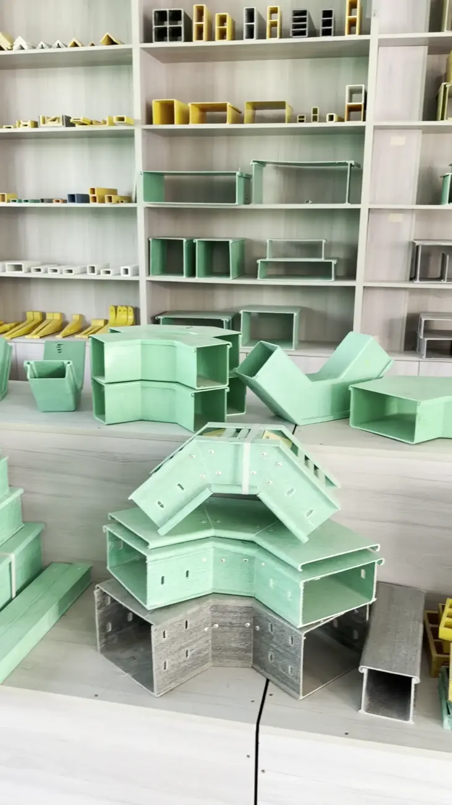
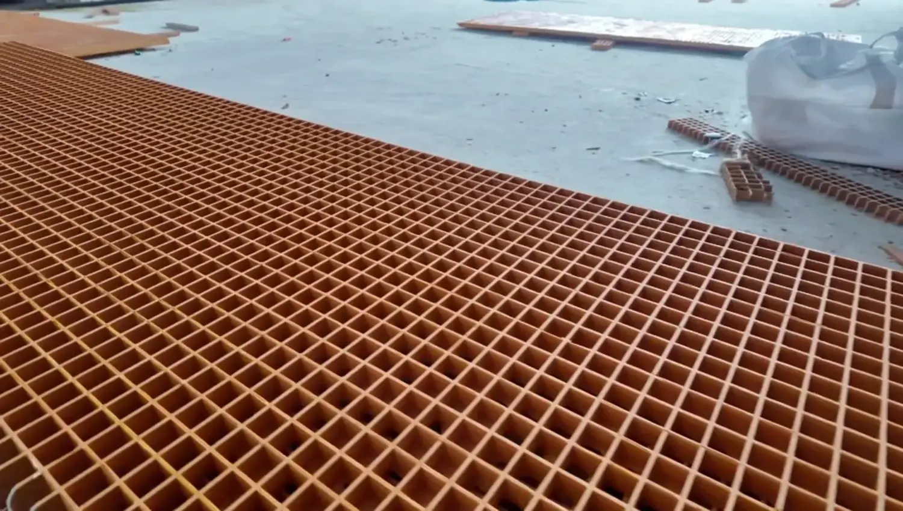
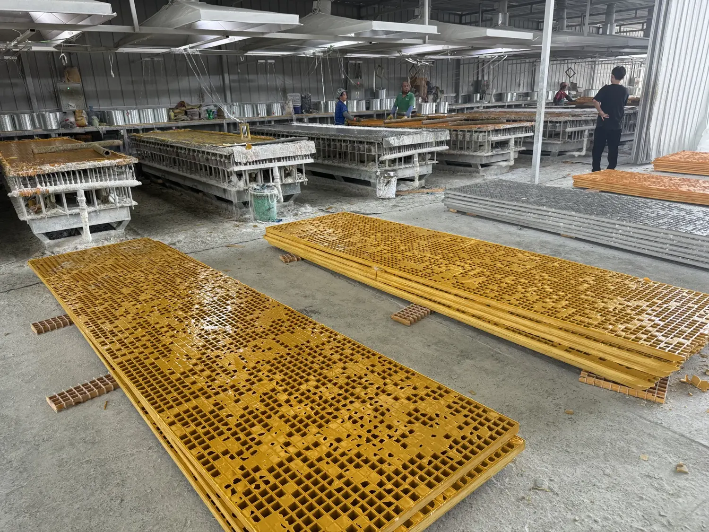

01FRP Cable Trays
↗Fiberglass cable management products for industrial projects. Discuss tray sections, fittings and your installation requirements with us.
Fiberglass cable trays and grating, from our factory in Hebei to your next project.
Find your starting point below. Share your drawings, dimensions and application with our team to discuss the right product.

01Fiberglass cable management products for industrial projects. Discuss tray sections, fittings and your installation requirements with us.

02Fiberglass grid panels for your project. Send the panel dimensions, intended use and quantity to discuss available options.

A look inside our grating workshopEstablished in 2016, 河北国利环保设备有限公司 is based in Hebei, China. Our 5,000 m² factory focuses on fiberglass cable trays and fiberglass grating.
Get a closer look at the people, products and production behind your enquiry through footage from our factory.
See the production floor ↓Factory footage, filmed on site.
A closer look at grating production.
Watch our team working on fiberglass grating in the workshop.
Use the video controls to play.Share your product, dimensions, quantity and destination. Our team will discuss the details with you.
Contact us on WhatsApp ↗